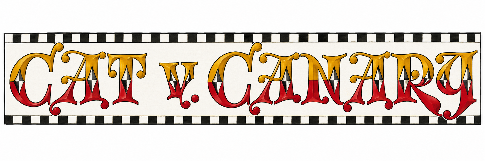

Senet
A thirty-square race game known from surviving boards, artwork, and tomb contexts. Full original rules have not survived; reconstructed play helps explore the evidence, but is not presented as certainty.

Explore a world of strategy, chance, craftsmanship, and conversation—one historic game at a time.
We teach history by playing—sometimes for five minutes, sometimes for an afternoon. Each game is a starting point for questions about its makers, players, material culture, and surviving evidence. Some traditions are living and well documented; others are known from ancient objects and incomplete records, so we are careful to describe modern reconstructions as reconstructions.
A thirty-square race game known from surviving boards, artwork, and tomb contexts. Full original rules have not survived; reconstructed play helps explore the evidence, but is not presented as certainty.
A decorated race board whose history extends back thousands of years. Archaeological finds and later written evidence offer glimpses into play, chance, and strategy.
A Roman board game using dice and counters. The surviving layouts offer a vivid glimpse of leisure, though aspects of the exact rules remain debated.
A living strategy tradition with generals, horses, chariots, cannons, and a river across the board. We treat it as a continuing game, not an extinct curiosity.
An asymmetric family of escape games: one side protects a king while the other attempts to surround him. Historical forms and reconstructed rule sets vary.
An Irish tafl-family game involving unequal forces, escape, and capture; surviving textual and archaeological evidence does not yield one universally certain rule set.
Players place and move pieces to form mills and capture opponents. Its widespread history invites questions about diffusion and how games evolve.
A lines-and-points capture game whose forms circulated in manuscript and cross-cultural traditions, anticipating later draughts-like play.
A race-and-capture game discussed in relation to Maya communities. We present origin and rule claims cautiously, and distinguish observation from later recreation.
A lively game of probability, bluffing, and reading your opponents. It illustrates how a simple handful of dice becomes a rich social experience.
Choose a board. A volunteer explains the objective and walks through the opening moves. Once you are playing, there is room to ask about archaeology, rules, probability, cultural exchange, and the daily lives of players. Some visitors prefer a quick introduction; others pursue the evidence behind the reconstruction.
We also invite questions about games that are not in our regular collection. We cannot promise to teach every tradition at every event, and we do not claim authority to represent the living traditions of another community. For Indigenous games, including Slahal, we emphasize their continuing cultural context and encourage learning from tribal and Indigenous educators.